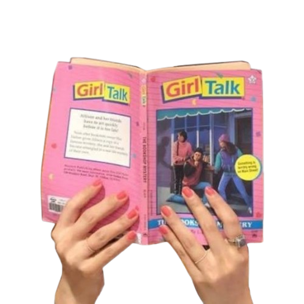
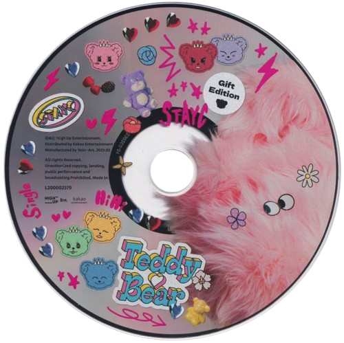
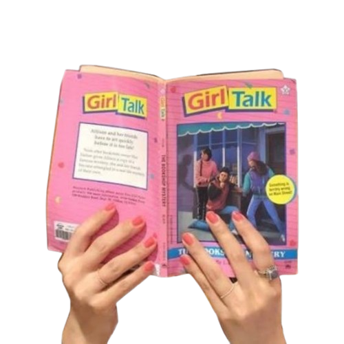
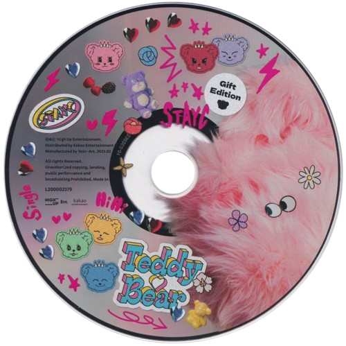

about
Hi! I’m Selvia Melani Putri ✿
I’m a college student who loves creating simple, aesthetic, and meaningful digital experiences.
Inspired by early 2000s visuals, soft colors, and nostalgic vibes, I enjoy combining
design and code into something calm and personal.
I’m currently learning web development, focusing on HTML, CSS, and basic JavaScript.
For me, building a website is not only about functionality, but also about feeling —
how it looks, how it moves, and how it makes people feel.
This portfolio is a small collection of my journey, experiments, and memories,
wrapped in a soft Y2K atmosphere ♡